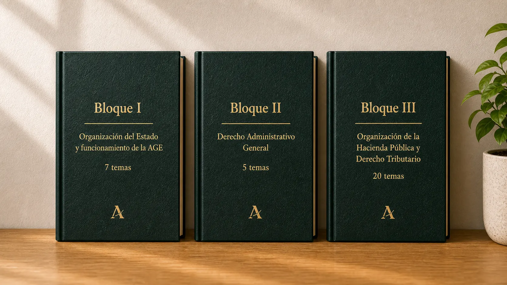

Gestión, inspección y recaudación
Los Agentes de Hacienda colaboran en actuaciones tributarias, atención al contribuyente, comprobaciones, recaudación y apoyo operativo dentro de la AEAT.
Información clara y actualizada para entender la convocatoria, el temario, los ejercicios y el salario de un Agente de Hacienda antes de empezar a estudiar.
La oposición a Agente de la Hacienda Pública permite acceder al Cuerpo General Administrativo de la AEAT. Es una vía especialmente atractiva por su estabilidad, convocatorias frecuentes, temario acotado y opciones de promoción interna.
Los Agentes de Hacienda colaboran en actuaciones tributarias, atención al contribuyente, comprobaciones, recaudación y apoyo operativo dentro de la AEAT.
El proceso incluye un test de 80 preguntas y un supuesto práctico escrito con 10 enunciados y tres preguntas por supuesto.
Las pruebas suelen celebrarse en distintas zonas de España, como Madrid, Barcelona, Valencia o Sevilla, facilitando el acceso a opositores de todo el territorio.
La convocatoria actualmente en vigor fue publicada en el BOE el 30 de diciembre de 2025 y regula el proceso selectivo de 2026. Se ofertan 1.000 plazas de acceso libre y 400 de promoción interna, incluyendo la reserva de 80 y 32 plazas, respectivamente, para personas con discapacidad.
920 plazas de acceso general y 80 reservadas para personas con discapacidad.
La solicitud se presenta electrónicamente y la tasa general de acceso libre es de 15,57 € en esta convocatoria.
La AEAT publica listas, plantillas, convocatorias de ejercicios y resultados en su sede electrónica.
Antes de estudiar conviene comprobar los requisitos de acceso: nacionalidad, edad, titulación mínima, capacidad funcional y situación administrativa. Los requisitos son los mismos que para cualquier oposición del grupo C1.
La convocatoria exige estar en posesión, o en condiciones de obtener, el título de Bachiller o Técnico.
Hay que tener cumplidos 16 años y no exceder la edad máxima de jubilación forzosa.
Se exige nacionalidad española y no estar inhabilitado ni separado del servicio de una Administración.
El temario de la oposición a Agente de la Hacienda Pública combina materias comunes de organización del Estado y Derecho Administrativo con un bloque específico de Hacienda Pública y Derecho Tributario.

Constitución, Cortes Generales, Gobierno, organización territorial, administración electrónica, igualdad y empleo público.
5 temasFuentes, actos administrativos, procedimiento común, fases del procedimiento y recursos administrativos.
20 temasSistema fiscal, AEAT, gestión, inspección, recaudación, sanciones, revisión, IRPF, IVA, Sociedades y Aduanas.
Las pruebas para aprobar el examen de Agente de Hacienda combinan un cuestionario tipo test de 80 preguntas sobre todo el programa y un segundo ejercicio centrado en diez supuestos prácticos con tres enunciados cada uno.
Preguntas con cuatro respuestas alternativas. Los errores descuentan un cuarto del valor de una respuesta correcta y las respuestas en blanco no penalizan.
Diez supuestos relacionados con las materias específicas, con respuestas breves y razonadas en un tiempo máximo de dos horas y media.
El salario bruto estimado de un Agente de Hacienda recién ingresado se sitúa en torno a 23.387 € anuales, sin incluir productividad ni posibles extras por destino o campaña.
Un Agente de Hacienda puede trabajar en áreas de gestión, inspección o recaudación, con tareas de atención, comprobación, documentación y apoyo operativo dentro de la Agencia Tributaria.
El destino concreto marca el tipo de expedientes, controles y atención que realizará cada funcionario.
La adjudicación inicial depende de la oferta de puestos y del orden de puntuación obtenido en el proceso.
El cuerpo C1 puede ser una puerta de entrada estable para crecer después dentro de la Administración.
Para una oposición con mucho detalle técnico, conviene estudiar por ciclos: base jurídica, consolidación tributaria, test y práctica escrita.